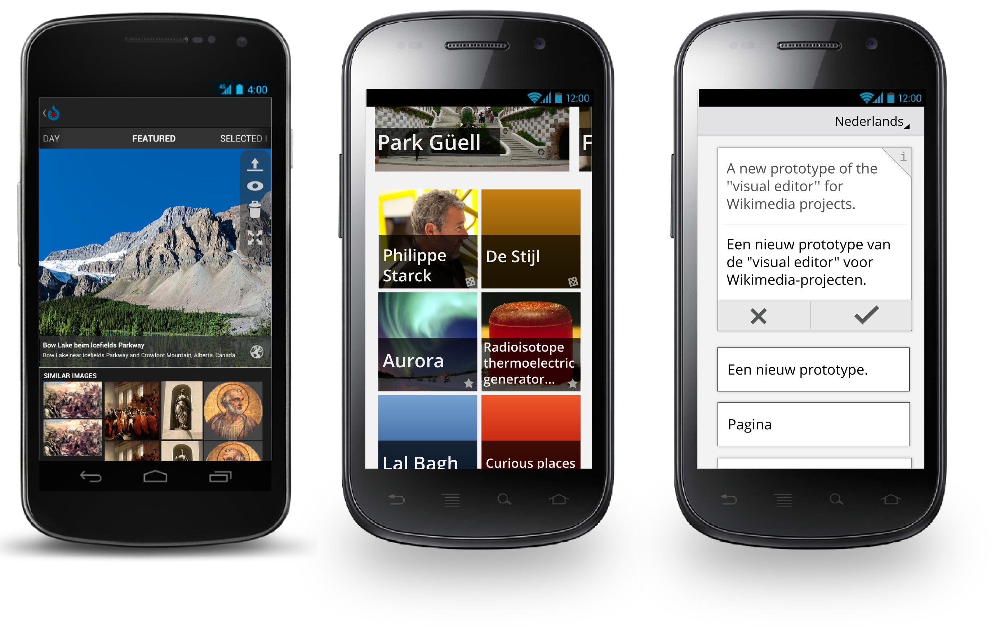
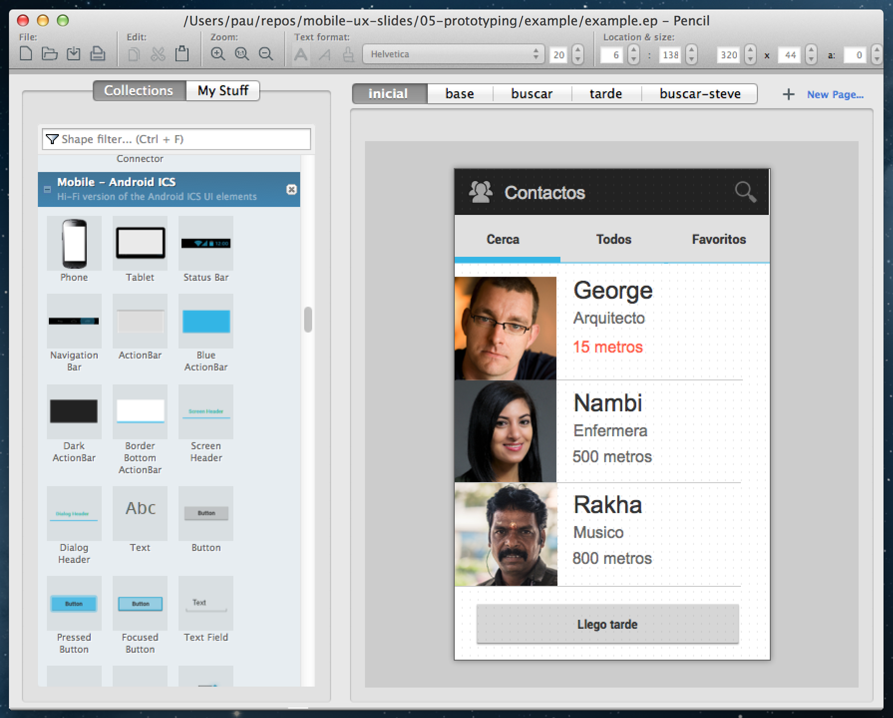
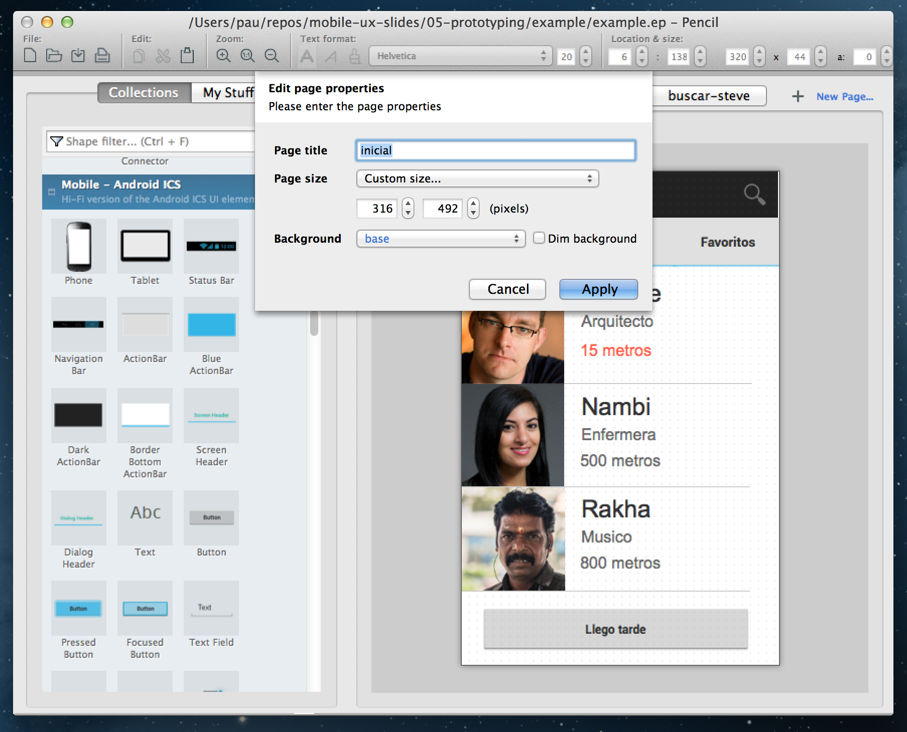
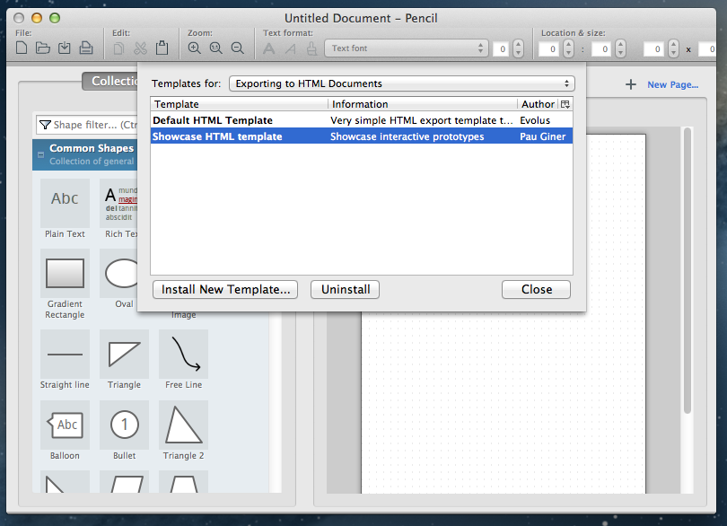
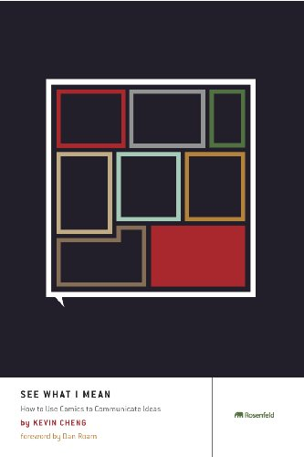
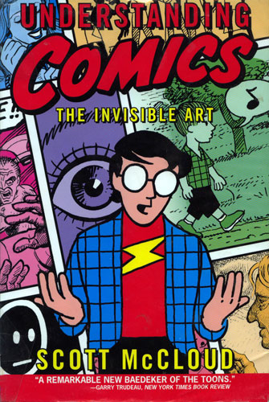

Prototipado
Experiencia de Usuario en Aplicaciones Móviles
Prototipado:
Tipos, herramientas y técnicas
Prototipado
Generar la ilusión de que el sistema funciona para que el usuario sienta la experiencia de usarlo, sin la necesidad de construirlo antes.
Prototipado con papel
Interacción a base de collage

Sentir el dispositivo en tus manos
Ver una imagen en el dispositivo ayuda
Prototipado digital
Secuencias que simulan la interacción
Herramientas multimedia genéricas
- Powerpoint, Keynote, etc.
- Fireworks
- Flash
- Visio
Prototipado con Keynote
How to create an interactive iPhone app prototype in 19 minutes from Amir Khella on Vimeo.
Herramientas específicas
- Pencil
- BalsamiQ
- Axure
Prototipado con BalsamiQ
Prototipando con Pencil
- Web del proyecto
- Plantilla de exportación
- Stencils para Android y iOS
- Puedes usar tus propios gráficos creados con Inkscape
Stencils y páginas
Páginas maestras
Plantillas
pencil Actividad: Prototipa con Pencil
Prototipa alguna de las interacciones que has diseñado en actividades anteriores
Prototipado con HTML
- Bootstrap o Foundation proporcionan componentes listos para utilizar.
- jQuery permite manipular de forma sencilla HTML
POP: prototipado desde el propio dispositivo
Mago de Oz
Simular la interactividad.
Ejemplo
Accede desde el móvil a http://goo.gl/264qV
Añadir al prototipo:
<script src="jquery.js"></script>
<script src="oz.js" data-remote="oz.json" data-delay="6000"></script>
Actividad: Añade una interacción proactiva
Aplica la técnica de Mágo de Oz a tu prototipo
Comunicar experiencias más allá de la UI

Comics


Video
Ilustrar el funcionamiento del producto
Actividad: Graba un vídeo del prototipo
- Grabar un vídeo del prototipo
- Puedes usar Quicktime y la cámara del portátil
- Graba cómo usas el prototipo
Material relacionado
Bibliografía
Prototyping
Todd Zaki Warfel. Rosenfeld Media, Noviembre 2009.
See what I mean
Kevin Cheng. Rosenfeld Media, 2012.
Understanding comics
Scott McCloud. Harper.
